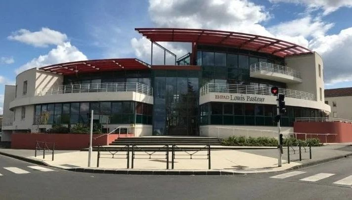

Formations
2023-2026 - BUT Réseaux et Télécommunications
IUT d'Aubière - 63170Ma formation approfondit mes connaissances théoriques et pratiques (travaux dirigés, projets de groupe). Les cours couvrent une large gamme de sujets indispensables aux infrastructures numériques modernes.

2022 - Baccalauréat STI2D
Lycée Lafayette de Clermont-Ferrand - 63000Obtention du baccalauréat avec l'acquisition des bases technologiques. Cette expérience a confirmé mon intérêt pour l'aspect concret et pratique des sciences et des réseaux.
Expérience professionnelle
Travail d'été - Service Restauration (Juillet - Août 2024)
Hôpital Sainte-Marie | Tournant de cuisineParticipation active à la gestion des repas des patients dans un cadre réglementé strict :
- Assurance stricte de l'hygiène et de la propreté des équipements de cuisine.
- Scellage de barquettes pour garantir la sécurité sanitaire.
- Préparation des chariots de distribution en fonction des régimes spécifiques des patients.
Compétences acquises : Organisation, travail en équipe sous haute exigence, rigueur procédurale.

Stage d'observation (Juin - Juillet 2021)
EHPAD de Lempdes | Assistant Technicien de SurfaceContribution à la maintenance et à la propreté des espaces communs pour le bien-être et la sécurité des résidents.
- Nettoyage approfondi et respect des protocoles d'hygiène en milieu de soins.
- Découverte de l'organisation interne d'un établissement médicalisé.
